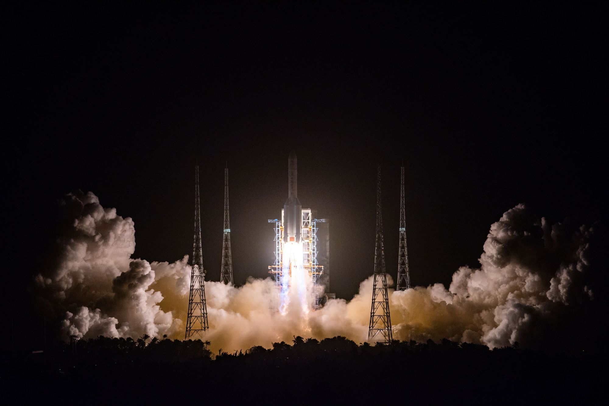
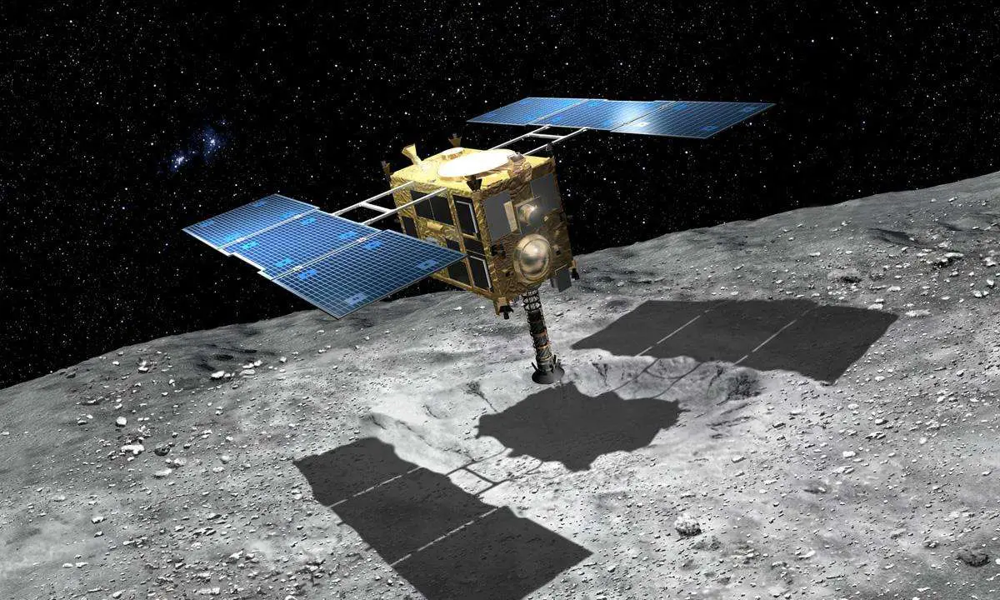
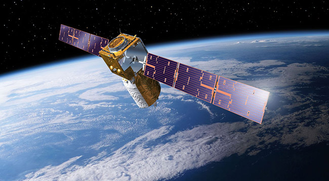
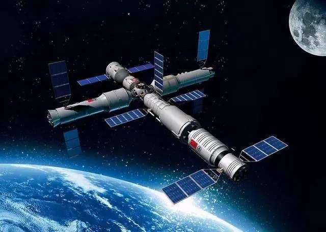
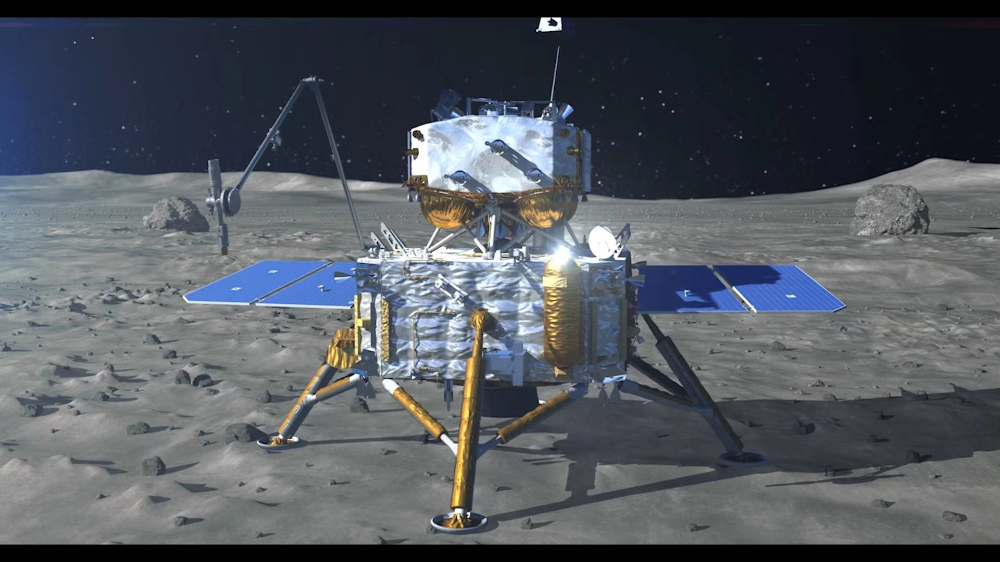
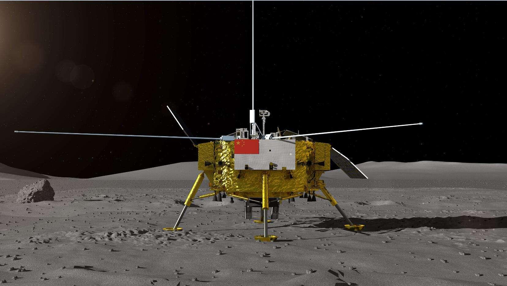
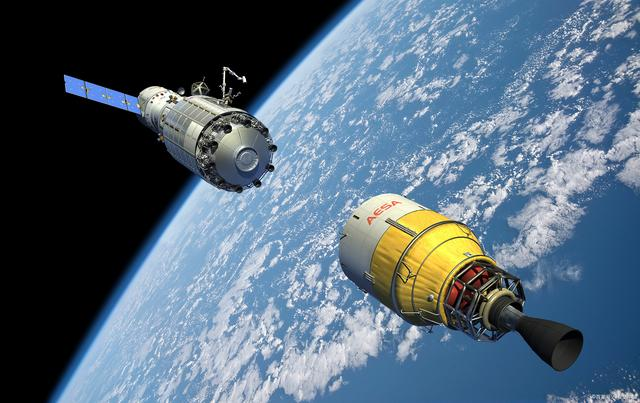
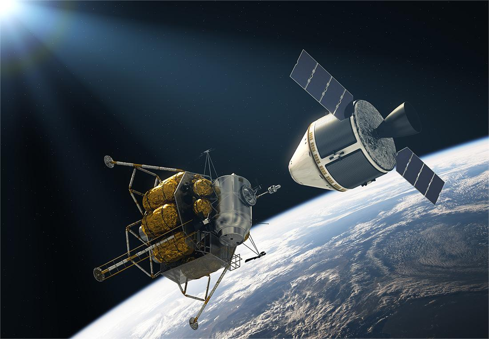
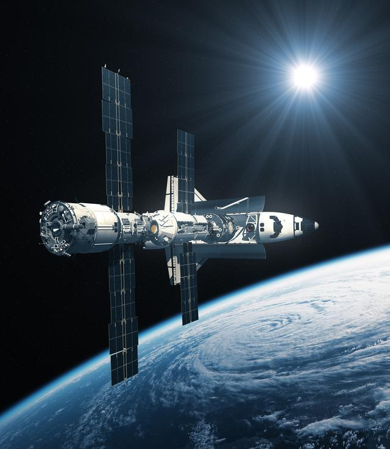

2007
10月24日，嫦娥一号任务发射。
工程师们巧妙地设计了调相轨道，历时7天3次升轨将嫦娥一号送往月球。
11月5日，嫦娥一号顺利被月球捕获，开启绕月旅程。

10月24日，嫦娥一号任务发射。
工程师们巧妙地设计了调相轨道，历时7天3次升轨将嫦娥一号送往月球。
11月5日，嫦娥一号顺利被月球捕获，开启绕月旅程。

国庆，更大更强的火箭一举将嫦娥二号送往地月转移轨道。 环月使命完成后，嫦娥二号飞往日地L2点，开展科学探测。

嫦娥三号出征，12月14日身披五星红旗的嫦娥三号稳落月球。“巡天、观地、测月”着陆器与月兔号月球车成为了月球上最忙碌的访客。

10月24日，嫦娥5T1——再入返回飞行试验器发射。在演绎了优美的地月“8字”舞蹈后，11月1日，返回器顺利回乡。

5月21日，一颗名为“鹊桥”的中继卫星踏上征程，前往地月L2点静静等候，在距离月背约6.5万千米处“鹊桥”拍下绝美的地月同框照。 同年12月8日，嫦娥四号发射

1月3日，人类探测器首次造访月背。随着玉兔二号月球车缓缓驶出，中国的月背征途就此展开。

11月24日，嫦娥五号由“胖五”火箭托举飞天，通过“钻取”与“铲取”两种方式开展采样。12月17日，携带1731g月球样品荣归故里。

6月25日，嫦娥六号任务圆满成功，实现世界首次月球背面采样返回。7月23日，科学家们在嫦娥五号带回的月壤中首次发现分子水，这也为未来建设月球基地带来了希望！

按计划，我国将在2030年前实现载人登陆月球开展科学探索。